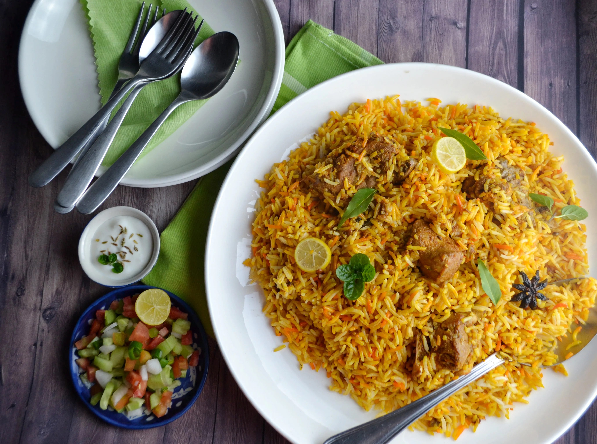

biryani

Description
Biryani is a mixed rice dish originating among the Muslims of the Indian subcontinent. It is made with spices, rice, and meat (usually chicken, goat, lamb, prawn, fish or beef), or eggs or vegetables such as potatoes in certain regional varieties.
Ingredients
- Chicken – I prefer to cook Biryani with a combo of chicken drumsticks and chicken thighs as they don’t dry out during the cooking process.
- Rice – Biryani is all about rice; therefore, use extra-long Basmati rice for this recipe.
- Ginger and Garlic paste – the basic flavoring squad.
- Fresh herbs – cilantro and mint leaves.
- Onions – lots of them. We need sliced onions as well as onions for Birista. Birista is fried onions that are a must-have for any Biryani. It adds a rich and royal touch to our Biryani. You can make Birista at home or use store-bought.
- Whole Spices – Bay leaves, whole black cardamom, star anise, cinnamon stick, cloves, peppercorns, and Shahi Jeera.
- Spices and seasonings – Basic spices that make up the masala are – degi mirch, coriander powder, turmeric, garam masala powder, mace, and salt.
- Milk + Saffron strands – lends a beautiful vibrant yellow color to our biryani.
- Yogurt + lime juice – together they tenderize the meat. It creates an acidic environment, and that makes the chicken juicy and tender.
- Ghee + oil – to cook the biryani.
Steps
Step 1- Marinating Chicken
- Clean and wash the chicken pieces thoroughly under tap water. Drain the water completely.
- Transfer chicken to a large mixing bowl and add lemon juice. Rub the juice all over the chicken.
- Add ginger and garlic paste.
- Then, add all the spices – degi mirch, coriander powder, turmeric powder, garam masala powder, salt, and fried onions.
- You can add fresh cilantro leaves and mint leaves to the marinade too.
- Add yogurt to the spice mix.
- Mix and roll the chicken to coat in the marinade.
- Cover and allow it to rest for an hour.
Step 2 – Making of Birista- Fried onions
- Combine onions and cornstarch in a large bowl.
- Toss to coat cornstarch all over the onion rings.
- Heat oil in a pan. Dust of the excess cornstarch and add a small batch of onion rings to the hot oil. When the oil is hot, add the onions. Never add the onions to cold oil; they will not become crispy.
- Fry the onions for 9-10 minutes or until deep golden brown. Remove from oil and drain on a kitchen paper towel. Repeat the process with the rest of the onions.
Step 3- Saffron Milk + Preparing Rice
- Fried onions will stay good for a month in the refrigerator.
- Let’s move on to the next step. Add milk to a microwave-safe bowl. Heat the milk for 40 seconds. Remove from the microwave and add saffron strands to the milk. Stir until combined and set aside.
- While the chicken is marinating, rinse the rice under tap water until the water runs clear.
- Soak rice for 15 minutes.
- In a wide dutch oven, add water and bring it to a boil. Season it with salt, black cardamom, cloves, and bay leaves. The ratio of rice to water should be 1:3, meaning 1 cup of rice and 3 cups of water.
- Drain and rinse the rice again. Add the drained rice to the boiling water.
- Gently mix the rice and parboil it for 4-6 minutes in hot water. The rice should be 70% cooked, meaning when pressed in between the fingers in breaks with slight pressure. If it breaks instantly when pressed, then you have overcooked the rice. Do not proceed with this rice as you will end up with sticky biryani.
- Once the rice is parboiled, turn the heat off. Remove the rice in the strainer.
Step 4- Cook the Chicken
- Heat ghee in a heavy-bottomed dutch oven. Add whole black cardamom, peppercorns, cinnamon stick, bay leaves, star anise, mace, and shahi jeera.
- Cook the whole spices for a few seconds.
- Add sliced onions to the spices. Cook until the onions are lightly golden in color.
- Add marinated chicken to the pan.
- Mix to combine and cook chicken on medium-low heat for 7-8 minutes. The yogurt in the marinade will release its water. Don’t worry; we will use these juices to layer our biryani.
- Add kasoori methi to the chicken and take it off the flame.
- Now, layer the parboiled rice on top of the chicken.
- Spread it evenly all over the chicken. The chicken should be covered with a generous layer of rice.
Step 5- Assembling Biryani
- Pour saffron milk all over the rice. Saffron adds a nice yellow touch to the final dish.
- Add mint leaves.
- Generously add fried onions or birista all over the biryani.
- For that rich buttery taste, add ghee on top of all that layering.
- Place a heavy lid over the pan. Seal the lid and pan with kneaded dough.
- Turn the heat on and cook the biryani for 2-3 minutes on high heat. After that, lower the heat to the lowest setting and let the biryani simmer for 10-12 minutes.
Once the cooking time is over, turn the flame off. Allow the rice to rest in its own steam for 4-5 minutes. Carefully remove the dough seal from all around the pan.
- It’s time to lift the lid. Gently fluff the rice with a spatula. Hidden underneath the rice, you will discover tender, juicy pieces of chicken bursting with fantastic flavor from all the spices and herbs.